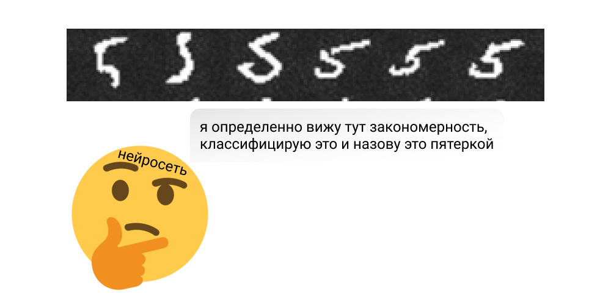
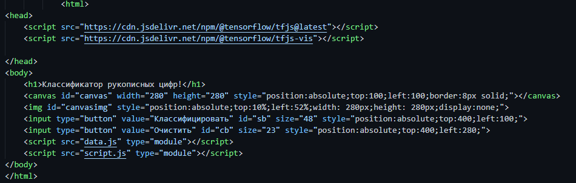
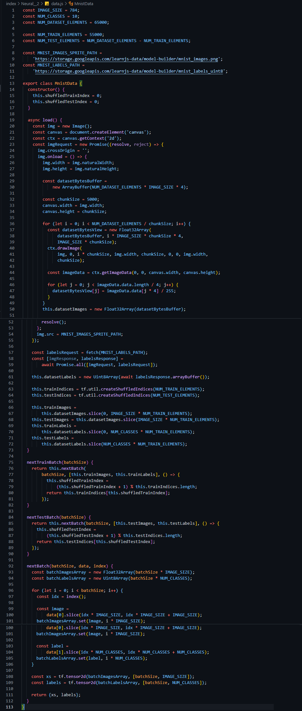
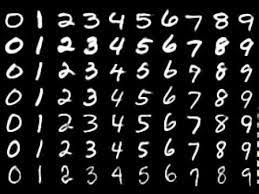
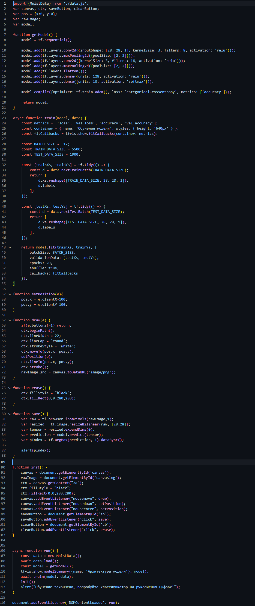

Как только пользователь зашел на сайт, нейросеть начинет обучение. Она
обращется к базе данных - MNIST,
которая содержит в себе 65 000 изображений рукописных цифр. Нейросеть
анализирует различия изображений и классифицирует их. Это выглядит
примерно так:

Обучение нейронной сети закончилось.
Пользователь рисует какое-нибудь число в canvas'е, и когда
пользователь зканчивает рисовать он жмет на кнопку - "классифицировать".
Нейросеть начинает анализировать, то что нарисовал пользователь.
Нейронная сеть сравнивает то, что нарисовал пользователь с теми данными,
которые она получила после обучения. И когда нейросеть находит то, что
наиболее похоже на каракули пользователя и выдает результат.
Не вкратце. С кодом, и другими вещами, которые вы, вероятно,
не поймете
В документе HTML пишем следующее:

Тут мы задаем классическую html структуру, к которой подключаем библиотеки
tensorFlow.js и TFvis.js. Внутри body добавляем тег canvas - элемент, предназначенный
для создания растрового изображения в нем. Именно в нем пользователь и будет рисовать
Также добавляю два инпута с типом button. Первая кнопка будет активировать
классификацию рисунка пользователя, а вторая будет очищть canvas.
перед закрывающим тегом body ставлю два тега sctipt. Первый будет подключать
файл ./data.js, в котором будет описан метод работы с MNIST. Второй script
будет подключать файл ./script.js, в котором будет реализована работа нейронной сети,
а также возможность рисования в холсте, его очистка и запуск классификации.
В файле ./data.js пишем следующее:

Честно говоря, объяснять, как работает этот код смысла нет, так как
даже на том ресурсе с которого я его и взял говорят, что нужно его просто
скопировать и вставить в свой файл data.js. Что же тогда делает этот код?
Вкратце - задает алгоритм работы с MNIST. Что вообще такое MNIST? MNIST - это
база данных, содержащая 65 000 изображений рукописных цифр, размером 28x28 пикселей.

Изначально база данных MNIST - это одно гигантское изображение. Это сделано
для того, чтобы облегчить работу с ней. Куда проще работать с одним файлом, который
весит 10мб, чем работать с 65 000 файлами, с разным весом.
Код "нарезает" это гигантское изображение на 65 000 "кусочков" размеров 28х28 пикселей
и выдает массив данных, содержащий 65 000 изображений рукописных цифр.
В script.js пишем это:

Код импортирует "нарезанный" массив данных MnistData из data.js. Задает
несколько переменных, которые, пока что, ничего не значат:
canvas, ctx, savebutton, clearbutton, rawImage, model, а также, пока
единственную, хоть что-то значущую, переменную - pos, которая представляет собой
объект, содержащий координаты x, y, которые помогут в реализации функции рисования.
Фунция getModel( ) создает модель, добавляет в модель слои нейросети и компилирует слои.
асинхронная функция train(model, data) задает переменные: metrics - массив,
содержащий потери данных, числовые потери данных, точность, числовая точность;
container - объект, задающий имя и стили будущему графику, который будет визуализировать
процесс обучения нейросети. fitCallbacks - отобразит график; BATCH_SIZE - задает
размер ветви - 512; TRAIN_DATA_SIZE - размер данных для тренировки - 5 500, то есть
нейросеть будет использовать только 55 000 изображений из MnistData; TEST_DATA_SIZE -
задает количество данных для тестирования - 1 000; Массив [trainXs, trainYs] - обучает
нейросеть по оси x и y; Массив [testX, testY] - тестирует нейросеть по оси x и y;
в конце функция возвращает модель, с переданными в ней значениями trainXs, trainYs.
Функция swtPosition() задает координаты холста, в котором будет рисовать пользователь.
Если позиция холста в css и в этой функции будут отличаться, будут появляться баги, к примеру
пользователь не сможет рисовать в холсте вообще
Функция draw(e) дает пользователю возможность рисовать на холсте. Работает это так: ctx.beginPath()
начинает создание растрового изображения; ctx.linewidth - задает ширину линии, рисуемой пользователем
- 22 пикселя; ctx.lineCap - задает форму точки - круг; ctx.strokeStyle - задает цвет линии - белый;
rawImage.src - форматирует холст в png картинку.
Функция erase() - очищает холст: ctx.fillstyle - полностью закрашивает холст в черный цвет;
Функция save() - сохраняет изображение, нарисованное пользователем.
Функция init() - создает холст и реализует возможность рисования в нем.
Функция run() - запускает все вышеописанные функции, кроме save(), erase() и draw().